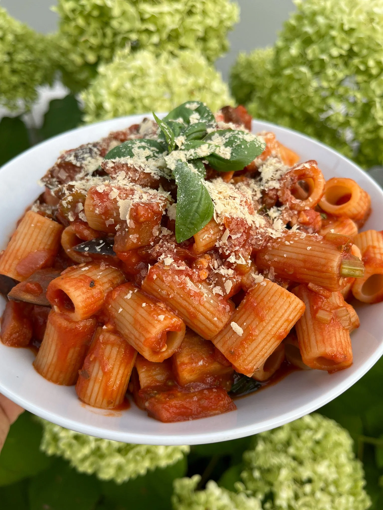

Home
Pasta alla Norma

Description
Pasta alla Norma - Currently one of my favourite Summer dishes!
It is made from fried eggplant in a rich tomato sauce.
Ingredients
- 500g pasta
- 1 large eggplant
- Freh tomatoes or 1 can tomato sauce
- Tomato paste
- 1 large red onion
- 2 garlic cloves (or more)
- Oil, salt, pepper, herbs
- For garnish: Yeast flakes and fresh basil
Steps
- Cut the augbergine in small cubes, let them rest in a bowl with a genoures amount of salt
- Cut the onion, garlic cloves and fresh tomatoes
- Rinse the augbergines with water an pad dry
- Fry until golden brown and set aside
- Fry the onion and garlic until golden
- Add tomato paste and let it brown a little
- Then add the aubergine, fry briefly and deglace with the tomatoes/li>
- Season the sauce with salt, pepper and herbs
- Let the sauce simmer for about 10-15 minutes and cook the pasta according to the instructions on the packet
- Mix the pasta with the sauce and garnish with yeast flakes and fresh basil